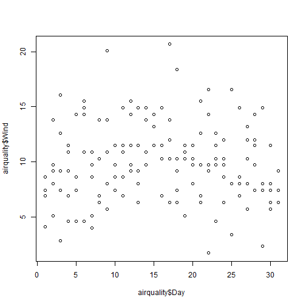
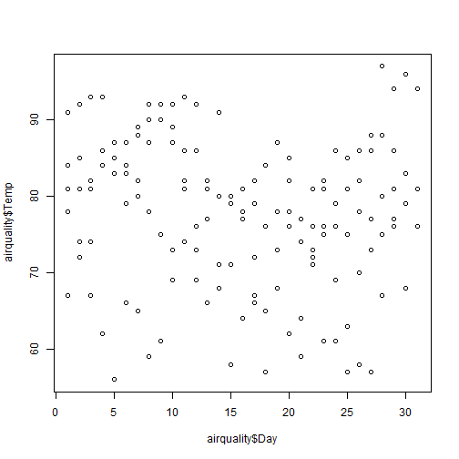

This is a shiny application to calculate
- mean,
- median and
- standard deviation
from longitudinal data.
markist
This is a shiny application to calculate
from longitudinal data.
Wind data from the aiquality data set can be seleted.
 
Temperature data from the aiquality data set can be seleted as well!
To get started:
Click into the plot:
the calculated variable will be plotted between the clicks
P.S: You can choose a title!